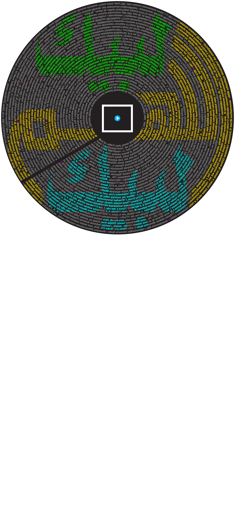

<audio id="haj" src="haj.mp3" preload="auto"></audio>


<script>

  function haj() {
        var audio = document.getElementById("haj");

        if (audio.duration > 0 && !audio.paused) {
            audio.pause();
            audio.currentTime = 0;
        } else {
            audio.play();
        }
    }
</script>


<map name="image-map">
  
  
    <area target="_blank" alt="" title="" href="" onclick="javascript:haj(); return false;"coords="447,457,683,681" shape="rect">
</map>

